Остались вопросы по вывозу мусора?
Прозрачность и законность — основа нашего сервиса.
Здесь мы подробно отвечаем на вопросы о нашем автопарке.
Как происходит вывоз мусора?
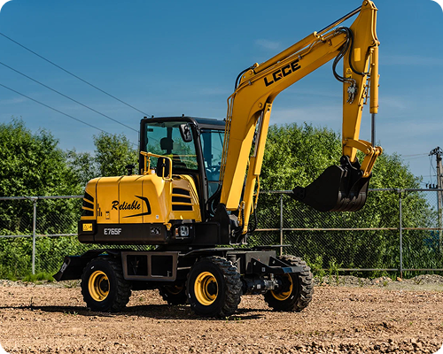
1. С какими отходами работает «ЭКО-Вортекст»? Мы специализируемся на вывозе строительного мусора, крупногабаритных отходов (КГМ), порубочных остатков (веток, пней) и промышленного хлама.
Какой автопарк у компании?
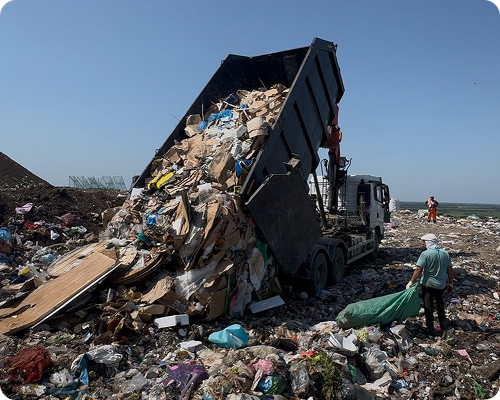
Какие контейнеры можно у вас заказать? Мы предоставляем бункеры различного объема: от компактных «лодочек» на 8 м³ до вместительных контейнеров на 27 м³. Наш диспетчер поможет точно подобрать размер под ваш тип мусора.
Предоставляете ли вы документы?
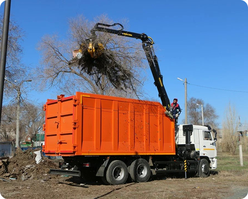
Как быстро вы подаете машину? При срочном заказе техника «ЭКО-Вортекст» прибывает на объект от 2 часов. Заявки на плановый вывоз лучше оставлять за день до нужной даты.
Заголовок для блока 4
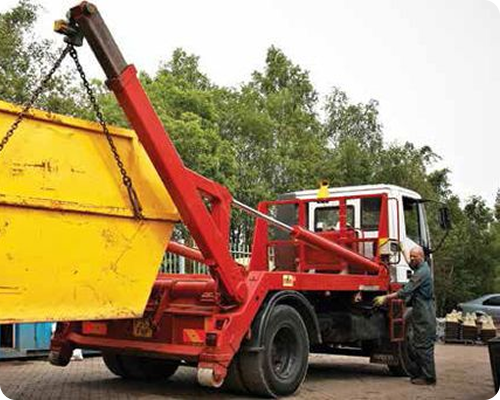
По какому графику вы работаете? Мы принимаем заявки и осуществляем вывоз мусора круглосуточно, 24/7, без перерывов и выходных. Если вам нужен ночной вывоз — мы подадим технику точно в срок.
Заголовок для блока 5
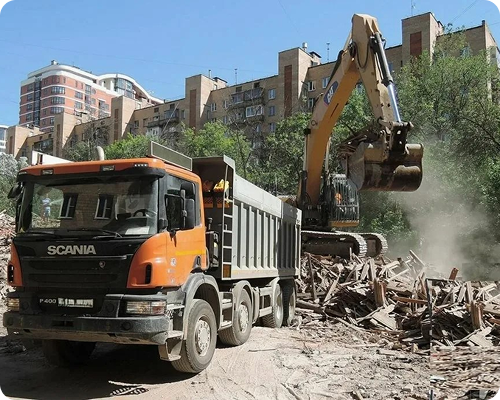
Куда вы вывозите строительный мусор? Весь собранный мусор транспортируется на легальные полигоны для дальнейшей официальной утилизации в строгом соответствии с экологическим законодательством РФ.
Заголовок для блока 6
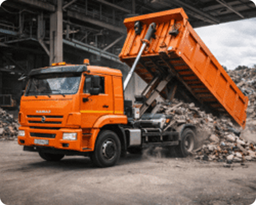
6. Как заключить договор и как оплатить услуги? Мы работаем как с физическими, так и с юридическими лицами. Оплатить услуги можно наличными или по безналичному расчету (с НДС и без НДС). Для бюджетных учреждений доступна оплата по КБК.
Заголовок для блока 7
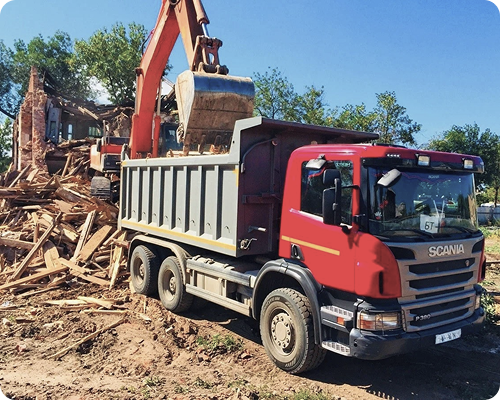
Выдаете ли вы закрывающие документы? Да, мы предоставляем полный пакет документов (акты, талоны) в день выполнения работ. Наша деятельность лицензирована и на 100% соответствует требованиям 44-ФЗ и 223-ФЗ.
Заголовок для блока 8
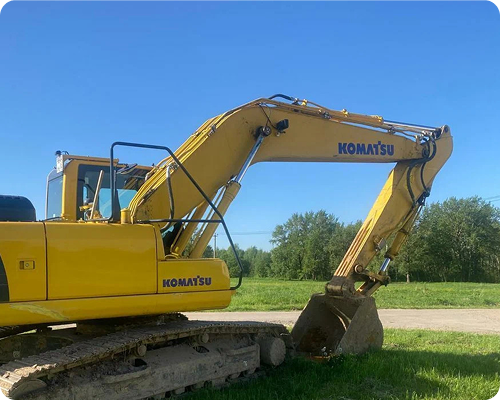
В каких районах работает «ЭКО-Вортекст»? Мы обслуживаем весь Краснодар, а также прилегающие населенные пункты Краснодарского края и Республики Адыгея.
Заголовок для блока 9
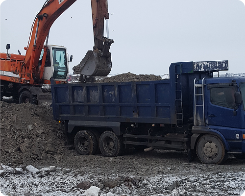
Что делать, если контейнер оказался перегружен? Если вес или объем мусора превышает технические нормы бункера, спецтехника просто не сможет его безопасно поднять. В таком случае излишки необходимо отгрузить.
Заголовок для блока 10
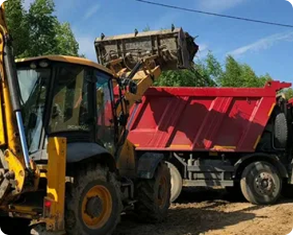
Как правильно выбрать размер контейнера? Для тяжелого мусора (бой бетона, кирпич, грунт) используются бункеры 8 м³. Для легких, но объемных отходов (утеплитель, ветки, гипсокартон) отлично подойдут контейнеры на 20–27 м³.
Заголовок для блока 11
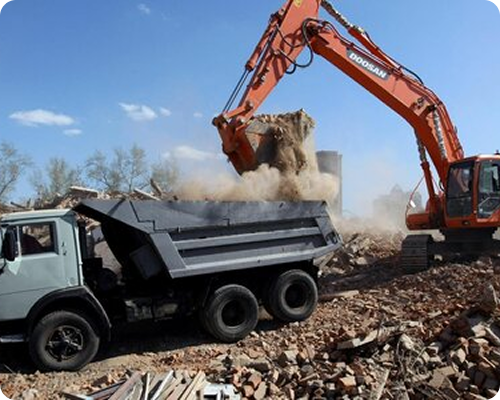
13. Правила загрузки контейнера — какие они? Главное правило: мусор не должен выступать за верхние борта контейнера. Транспортировка переполненного бункера строго запрещена правилами дорожного движения и техникой безопасности.
Заголовок для блока 12
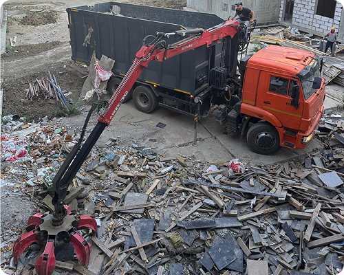
Можно ли организовать регулярный вывоз мусора? Да, мы заключаем абонентские договоры с ЖКХ, ТСЖ, производственными предприятиями и застройщиками на плановый вывоз по зафиксированному тарифу.
Заголовок для блока 13
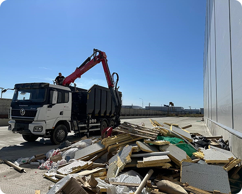
Предоставляете ли вы технику для демонтажа и погрузки? Помимо контейнеров, мы предоставляем профессиональные бригады для демонтажа зданий и спила деревьев, а также экскаваторы и ломовозы для быстрой погрузки больших объемов мусора.
Заголовок для блока 14
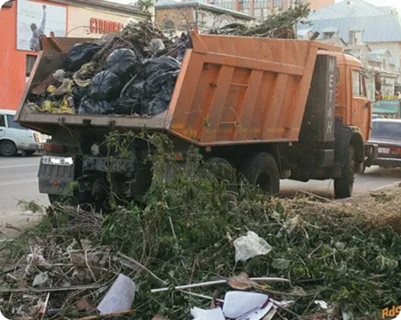
Предоставляете ли вы технику для демонтажа и погрузки? Помимо контейнеров, мы предоставляем профессиональные бригады для демонтажа зданий и спила деревьев, а также экскаваторы и ломовозы для быстрой погрузки больших объемов мусора.
Заголовок для блока 15
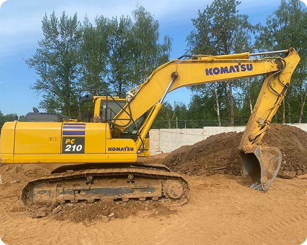
Здесь вы можете вставить свой текст.